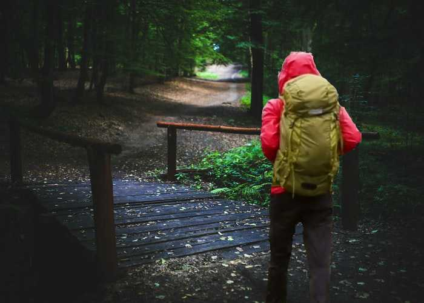
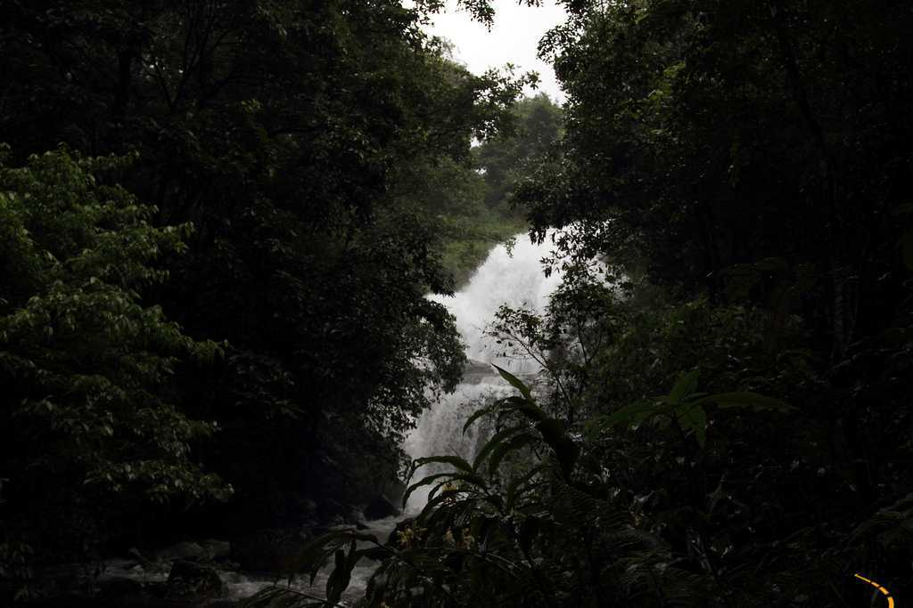
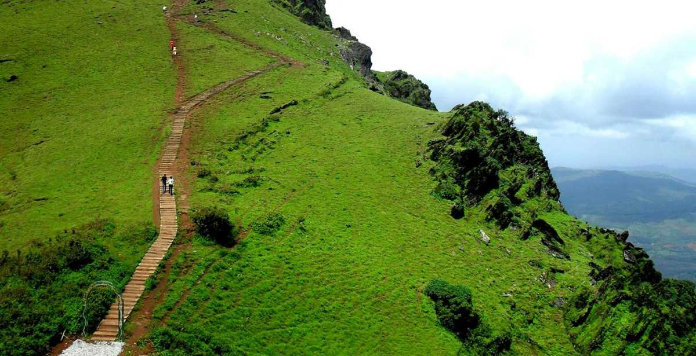
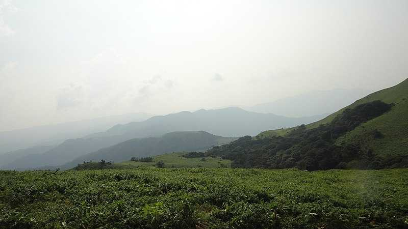

Wake up to the smell of
tranquilizing coffee,
and enjoy the scenic beauty of this misty land of hills and streams. Popularly known as the Scotland of India,
Coorg lives up to its name with luring amalgamation of history, luxury, adventure, mouth-watering cuisine.
Located along the western ghats, this famous coffee-producing hill station is well-known for its jaw-dropping
ravishing scenery and opulence.
Quench your thirst for adventure as you drive along the misty roads in the winter afternoons around the
hills. Though the tinge of excitement is unnerving enough to boost your enthusiasm, do take care of the safety
measures while you enjoy your exhilarating journey to Coorg.
Coorg, officially known as Kodagu, is the most affluent hill station in Karnataka. It is well known for its
breathtakingly exotic scenery and lush greenery. Forest covered hills, spice and coffee plantations only add to
the landscape. Madikeri is the region's centre point with all transportation for getting around starting from
here. On a visit to Coorg, cover the beautiful towns like Virajpet, Kushalnagar, Gonikoppal, Pollibetta, and
Somwarpet, and experience the beautiful concept of "homestays" to make your experience more memorable!
Abbey Falls, also known as Abbi Falls, is located around
10 kilometres away from the town of Madikeri and is one of the most popular tourist
attractions
in and around Coorg. The water cascade coming down from the cliff from a height of 70
feet
provides a spectacular scene to behold.
Talakaveri is the source of the river Kaveri, located on the Brahmagiri hill near
Bhagamandala. Kodavas erected a tank which is now considered as its origin. It is
believed that the river originates as a spring feeding a tank or a Kundike and then
flows underground to re-emerge as Kaveri some distance away. The place has a temple
dedicated to the Goddess Kaveriamma is located next to the tank and bathing in it on
special occasions is considered holy.
Raja's Seat is a garden built on an elevated ground overseeing the valleys that lie to
the west, making it a popular viewpoint to watch sunrise and sunset. Dotted with
flowering plants and skillfully designed artificial fountains, the garden was a
favourite venue to rejuvenate for the Kings of Kodagu, and they loved watching the
sunsets sitting here as they spent some memorable time with their Queens. The garden
here is a preferred picnic spot for the locals
A walk through the beautiful plantation estates is one of the most wonderful things to do
in Coorg. The region is known for its coffee plantations that also have a variety of
spice plants and vanilla trees. Most of these coffee estates provide a paid guided
walking tour and have stores from where you can buy coffee and spices
Trekking in Coorg

You could go for a professionally arranged trek or if you just want to wander in the
greens on your own, that too would be an equally enjoyable experience.
Honey Valley, Nilakandi Falls

The Nilakandi Falls are located the midst of the dense tropical forests of Coorg. It
is a
picturesque and serene waterfall that lends trekkers a wonderful waterfall
experience.
Honey Valley is a private resort in which this beautiful waterfall is located.
Brahmagiri trek

Taking individuals deep inside the Brahmagiri Wildlife Sanctuary, the Brahmagiri trek
is
a delight with its myriad offerings. The route traverses lush forests, green
grasslands
and countless small streams and rivers.
Mandalpatti

Overlooking the grassy knolls of Pushpagiri forests in the Western Ghats,
Mandalpatti is
a spectacular and unique vantage point in Coorg. Huddled at an altitude of 1800 m,
this
place mesmerises all those who visit it. It is also known by the name of
‘Muguli-Peth’
(translated in English as the market of clouds).